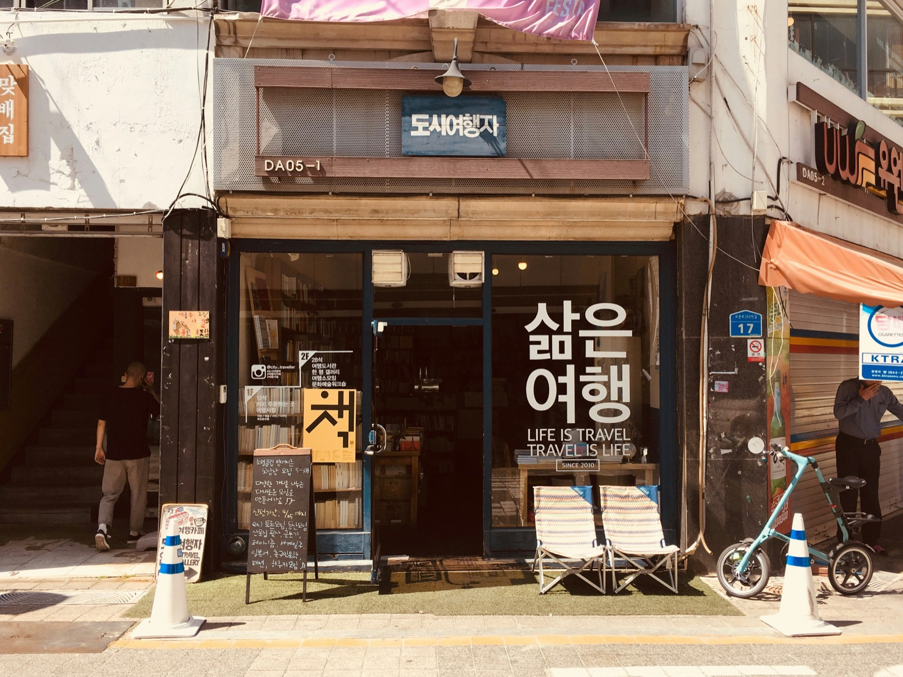

A three to five day accompanied trip for Korean adoptees who are ready to walk into the offices, read the file, and stand in the place they were born. You will not do any of it alone, and nothing will be translated at you.
Your records request costs nothing. Your DNA registration costs nothing. I will always tell you that first, and the resource directory on this site exists so you can do every free step without paying anyone.
What is not free is time, language, and company. The Korean side of a search happens in offices with limited appointment slots, in documents written in bureaucratic Korean from decades ago, and in conversations where the sentence being said and the sentence being meant are not the same. That is the part I do.
I was born in Busan. I have lived in Madagascar, France, India and Singapore, and then I came home. I work in Korean, English, French and Hindi. I have sat beside adoptees in agency and government offices as interpreter and companion, and I stay in the room afterwards.
Six things, and they are the six that actually change the outcome of a trip.
We plan before you fly: which appointments you need, when to file so the timing works, what to bring, and a realistic timeline. Korean offices book 14 to 50 days ahead and slots are limited, so this is the step that decides whether the trip works at all.
We go through your adoption documents together before any meeting, so you walk in knowing what your own paperwork says, which parts are inconsistent, and which questions are worth asking.
NCRC, adoption agencies, police, city and district offices. Korean to English or French, and back. Not just the words: the tone, the thing that was implied, and the follow-up question you would not have known to ask.
We travel to the city, town or neighbourhood in your records. Sometimes that means an address that still exists. Sometimes it means standing on a street that has been rebuilt twice. Both are worth going to.
If a meeting with birth family happens, I am in the room for it, and I am still there afterwards. This is the part people plan least and need most.
Food, markets, palaces, an afternoon with nothing scheduled. Not filler. A search trip that is only offices and documents is a trip you come home from more tired than when you left.
Flights, accommodation and government fees are not included, and I will not mark up anything you can book yourself. If you want help choosing where to stay, I will tell you what I would pick, including KoRoot's adoptee guesthouse, which is usually the gentlest first stay in Seoul.
This is the usual rhythm. Your file and the office calendar decide the real order.
We read your documents, confirm what you have already filed, book what can be booked, and agree what you want out of the trip. We also name out loud what you do not want to happen, which matters just as much.
No appointments. We meet, eat, and sit down with your paperwork so tomorrow is not the first time you are looking at it in Korea.
Records review, agency or NCRC meetings, police or district office if your case needs it. I interpret, take notes, and handle the follow-ups in Korean while we are still standing there.
We travel to the place in your records. Time built in afterwards to do nothing at all, because you will need it.
A second appointment, a meeting with birth family, or a Seoul day that belongs to you and not to your search. We decide when we know.
Korean correspondence does not stop when your flight leaves. I follow up on anything still open and translate what comes back.

I will tell you what is free. Your disclosure request, your file review and your DNA registration are handled by NCRC and the Korean police at no cost. I am selling company, language and planning, never access.
I will not oversell the odds. Many files are thin, and that is a documented pattern, not your failure. I will be honest before you book about what your paperwork does and does not make possible.
Your story stays yours. Nothing identifiable about you or your birth family goes on this site or anywhere else without your explicit permission, and even then the details stay blurred.
Small numbers only. One person or one family at a time. This is not a group tour and it will not become one.
Priced per trip, by quote.
Because a three day trip with two appointments in Seoul and a five day trip with a hometown visit and a reunion are not the same job. Tell me where you are in your search and I will send you a plan and a price.
No deposit is taken until we have agreed a plan and dates. If your appointments cannot be booked in your window, you pay nothing.
Yes, ideally. The Adoption Information Disclosure Request has to exist before a file review can be booked, and bookings open 14 to 50 days ahead. If you have not filed yet, tell me and we start there. It is free and I will walk you through it whether or not you book the trip.
That is a common outcome, and the trip is still worth taking. Reading your own file in the country it was written in, and standing in the place it names, changes something even when no one is waiting. I will never promise you a reunion.
Korean, English, French and Hindi. Appointments are interpreted Korean to English or Korean to French.
Yes, and often it is a good idea. Tell me who is coming when you enquire so the plan accounts for them.
Yes. If you have your own trip planned and only need someone beside you for specific appointments, say so and I will quote that instead.
Flights, accommodation, and any government fees. The records request, file review and DNA registration are free from NCRC and the Korean police, and I will not charge you for those.